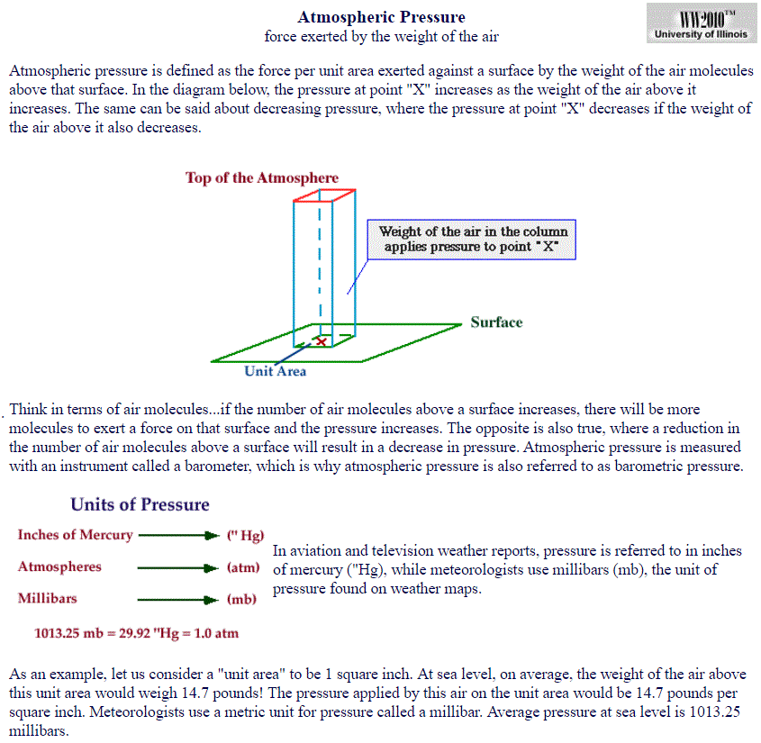
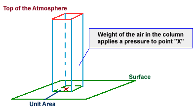
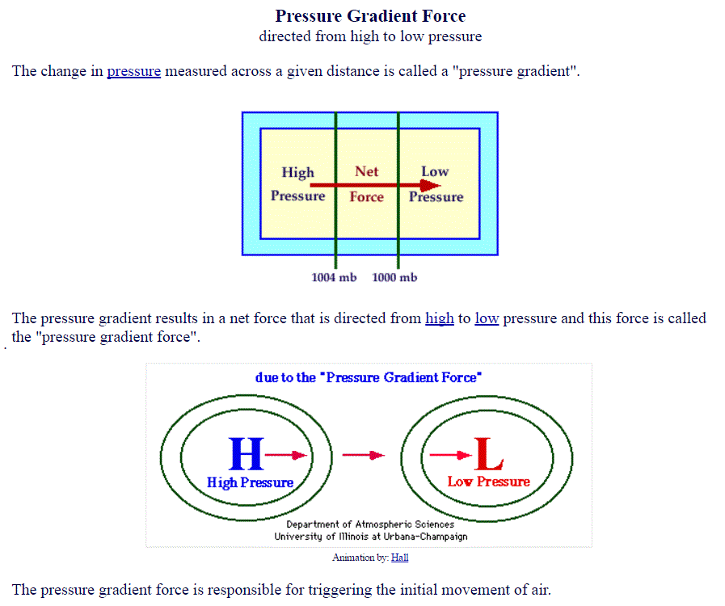
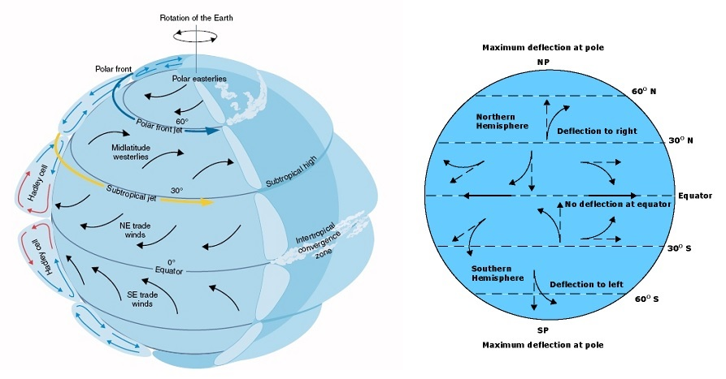
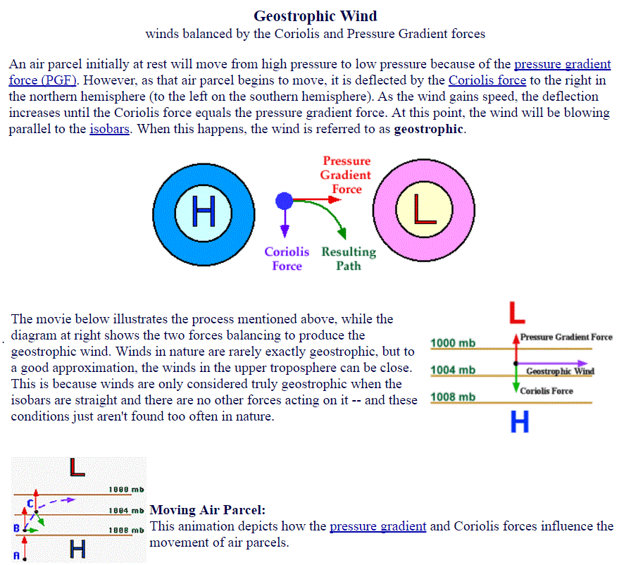
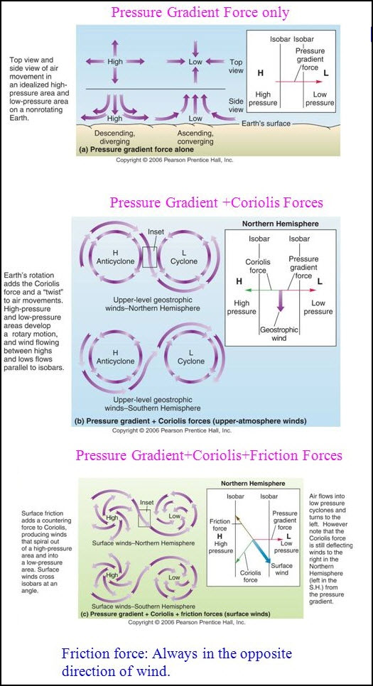
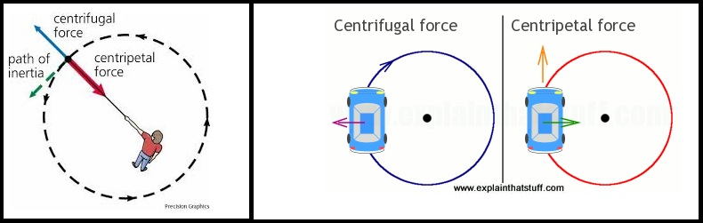

III. Pressure decreases with height.
 Click here for another tutorial on air pressure. |
theweatherprediction.com One of the earliest forecasting tools was the use of atmospheric pressure. Soon, after the invention of the barometer, it was found that there were natural fluctuations in air pressure even if the barometer was kept at the same elevation. During times of stormy weather the barometric pressure would tend to be lower. During fair weather, the barometric pressure was higher. If the pressure began to lower, that was a sign of approaching inclement weather. If the pressure began to rise, that was a sign of tranquil weather. There is also a small diurnal variation in pressure caused by the atmospheric tides. The barometric pressure can lower by several processes, they are: 1. The approach of a low pressure trough 2. The deepening of a low pressure trough 3. A reduction of mass caused by upper level divergence (vorticity, jet streaks) 4. Moisture advection (moist air is less dense than dry air) 5. Warm air advection (warm air is less dense than cold air) 6. Rising air (such as near a frontal boundary or any process that causes rising air) When the barometric pressure is lowering, it will be caused by 1, 2 or a combination of the 6 processes listed above. All the processes above deal either with decreasing the air density or causing the air to rise in order to lower the barometric pressure. When forecasting, try to figure out which physical processes in the atmosphere are causing the pressure to lower or rise over your forecast region. When looking at upper level charts, instead of looking for changes in barometric pressure you will be looking for height falls or height rises. Important: Barometric pressure is ONLY plotted on SURFACE CHARTS. Any upper level chart you examine will be taken on a constant pressure surface (e.g. 850, 700, 500, 300, 200). Because upper level charts use a constant pressure surface, height falls or height rises are used to determine if a trough/ridge is approaching and/or deepening. When heights fall it is due to a reduction in mass above the pressure level (i.e. if heights fall on an 850 mb chart, it is because the air is rising or low level cold air advection is occurring). On upper level charts you must consider what is happening above or below the pressure level of interest. If heights fall at 700 mb for example, it could be due to the fact that cold air advection is occurring in the PBL, therefore decreasing the overall height of the troposphere and decreasing the 700 mb height. Just to give you some complexity, barometric pressure can fall at the surface but heights can rise over the same region on upper level charts or vice versa. An example would be a large magnitude of warm air advection in the PBL. The warm air is less dense than the air it is replacing, therefore the surface pressure will fall. However, since warm air expands the height of the troposphere (because it is less dense and takes up more space) the heights aloft will rise. When I start throwing in vorticity, jet streaks, and topography this discussion will become even more complicated. The more you learn about meteorology and forecasting the more you will realize the pure complexity of the atmosphere, the interaction of many physical processes at the same time and that learning about meteorology and forecasting lasts a lifetime. For the most part, you can interpret height falls and rises the same way as surface barometric rises or falls. Increment weather is associated with height falls and lowering barometric pressure and fair weather is associated with height rises and rising barometric pressure. Other tips: 1. Low pressure troughs tend to move toward the region of greatest height falls 2. Ridges build most strongly into regions with the greatest height rises |
theweatherprediction.com The average pressure at the surface is 1013 millibars. There is no "top" of the atmosphere by strict definition. The atmosphere merges into outer space. There are 5 slices of the troposphere that meteorologists monitor most frequently. They are the surface, 850 mb, 700 mb, 500 mb, and 300 mb (or 200 mb). Why are these slices monitored and not others more frequently? Why not have a 600 mb and a 400 mb chart? Each of the primary 5 levels have a reason they are studied over other slices of the troposphere (sort of). The surface is obviously important because it gives information on the weather that we are feeling and experiencing right where we live. The 850 mb level represents the top of the planetary boundary layer (for low elevation regions). This is near the boundary between where the troposphere is ageostrophic due to friction and the free atmosphere (where friction is small). For low elevation regions the 850 mb level is the best level to assess pure thermal advection. The 500 mb level is important because it is very near the level of non- divergence. This allows for an efficient analysis of vorticity. Actually the level of non-divergence averages closer to the 550 mb level, but 500 mb is a more "round" number as compared to 550 mb so it was used. The 500 millibar level also represents the level where about one half of the atmosphere's mass is below it and half is above it. A level is needed to depict the jet stream. The polar jet stream has a vertical thickness of at least 200 millibars with the core of the jet averaging at about 250 millibars. Either the 200 or 300 mb chart can be used to assess the jet stream / jet streaks. In winter, the 300 mb chart works best and in the summer the 200 mb chart works best for analyzing the core of the jet. The jet stream is at a higher pressure level (closer to the surface) in the winter because colder air is more dense and hugs closer to the earth's surface. It is important to have an understanding of the average height of each of these important levels. 1000 mb is near the surface (sea level), 850 mb is near 1,500 meters (5,000 ft), 700 mb is near 3,000 meters (10,000 ft), 500 mb is near 5,500 meters (18,000 ft), 300 mb is near 9,300 meters (30,000 ft). All of these values are in geopotential meters; Zero geopotential meters is near sea level. The height of these pressure levels on any given day depends on the average temperature of the air and whether the air is rising or sinking (caused by convergence / divergence). If a cold air mass is present, heights will be lower since cold air is denser than warm air. Denser air takes up a smaller volume, thus heights lower toward the surface. Rising air also decreases heights. This is because rising air cools. Rising air could be the result of upper level divergence. Upper level divergence lowers pressures and heights because some mass is removed in the upper troposphere from that region. This causes the air to rise from the lower troposphere and results in a cooling of the air. If the average temperature of a vertical column of air lowers, the heights will lower (trough). |
The weight of the air above an object exerts a force per unit area upon that object and this force is called pressure. Variations in pressure lead to the development of winds, which in turn influence our daily weather. The purpose of this module is to introduce pressure, how it changes with height and the importance of high and low pressure systems. In addition, this module introduces the pressure gradient and Coriolis forces and their role in generating wind. Local wind systems such as land breezes and sea breezes will also be introduced. The Forces and Winds module has been organized into the following sections: * Pressure* Pressure Gradient Force * Coriolis Force * Geostrophic Wind * Friction and Boundary Layer Wind * Centrifugal Force and Gradient Wind Atmospheric pressure is defined as the force per unit area exerted against a surface by
the weight of the air above that surface. In the diagram below, the pressure at point "X"
increases as the weight of the air above it increases. The same can be said about decreasing
pressure, where the pressure at point "X" decreases if the weight of the air above it also
decreases.
 Thinking in terms of air molecules, if the number of air molecules above a surface increases, there are more molecules to exert a force on that surface and consequently, the pressure increases. The opposite is also true, where a reduction in the number of air molecules above a surface will result in a decrease in pressure. Atmospheric pressure is measured with an instrument called a "barometer", which is why atmospheric pressure is also referred to as barometric pressure.
As an example, consider a "unit area" of 1 square inch. At sea level, the weight
of the air above this unit area would (on average) weigh 14.7 pounds! That means
pressure applied by this air on the unit area would be 14.7 pounds per square inch.
Meteorologists use a metric unit for pressure called a millibar and the average
pressure at sea level is 1013.25 millibars.




 |